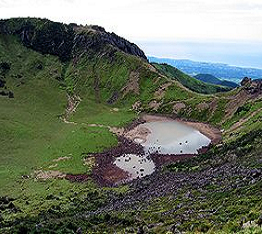

제3기의 서귀포층과 제4기에 속하는 성산 층 화순층 등의 퇴적암층과 현무암·조면질안산암 조면암 등의 화산암류, 기생화산에서 분출한 화산쇄설암 등으로 구성되어 있다. 본도에서의 화산활동은 크게 5회의 분출윤회로 구분되며 총 79회 이상에 달하는 용암분출이 관찰되고 있다. 특히 제주 전 면적의 90%이상을 차지하는 현무암류는 온 섬을 덮어 3다의 하나인 ‘석다(石多)’ 현상을 나타내고 있다. 이 현무암은 구멍이 많고 점착성이 있으며 검은 빛깔로서 가옥이나 담장 등에 많이 이용되고 있다. 360여 개에 달하는 화산구는 성산층 및 화순층 퇴적기에 형성된 것과 최후의 후화산활동의 산물인 제5분출기에 속하는 것으로 구분된다. 남부해변에서는 용암과 바다가 만나 육각기둥을 이루는 주상절리를 관찰할 수 있다.
제주는 세계적으로 유명한 화산도로서 화산지형의 특색을 잘 보여주고 있으며 원지형을 많이 보존하고 있어 침식윤회로 보아 유년기에 속한다. 주봉인 한라산을 중심으로 하여 동서사면은 매우 완만한 경사를 이루고 있으나 남북 방향에서는 약간 급한 사면을 갖는다. 전체적으로 보아 순상화산에서 볼 수 있는 아스페테형 화산이라 할 수 있다. 이런 모양은 제주도를 형성하는 화산분출이 전반기에는 광역분출이었으나 적어도 후반기에 들어와서는 백록담을 화구로 한 중심분출이었다는 데 기인한다.그리고 주봉인 한라산에서 사방으로 흐르는 하천은 복류하여 지하수를 이루기 때문에 평상시에는 건천을 이루며 이런 지하수는 해안 부근에서 해수에 밀려 용출하기 때문에 본도의 취락은 이 용천을 중심으로 해안에 치우쳐 큰 집촌을 이룬다.